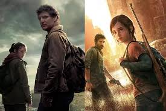
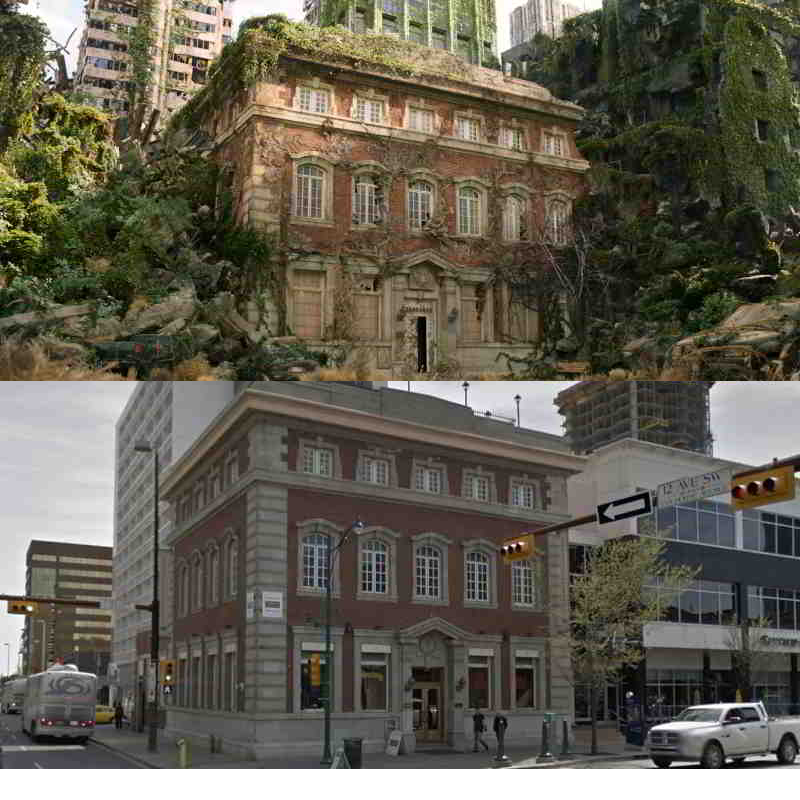
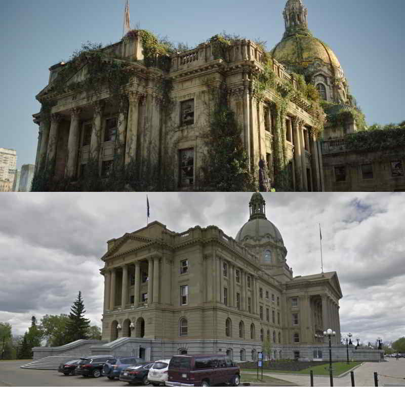
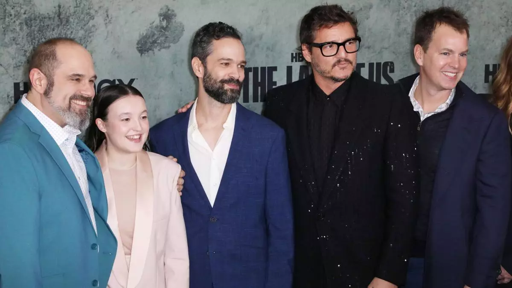

Sinopsis

The Last of Us es una serie de televisión de drama postapocalíptico, acción y suspenso, basada en el popular videojuego del mismo nombre desarrollado por Naughty Dog. La historia se sitúa en un mundo devastado por una pandemia causada por un hongo mutado (Cordyceps) que convierte a los humanos en criaturas agresivas similares a zombis. La trama sigue a Joel, un contrabandista endurecido por la tragedia, y a Ellie, una adolescente que podría ser la clave para salvar a la humanidad. Juntos emprenden un peligroso viaje a través de Estados Unidos, enfrentando tanto a los infectados como a otros sobrevivientes desesperados.
Locaciones


La serie fue filmada principalmente en Canadá, sobre todo en la ciudad de Calgary, en la provincia de Alberta. Se usaron distintas locaciones reales para recrear ciudades postapocalípticas, lo cual le dio a la serie un aspecto visual muy realista y cinematográfico. The Last of Us fue una de las producciones televisivas más grandes filmadas en Canadá, utilizando tanto escenarios reales como sets construidos para escenas interiores.
Creadores, Productores y Guionistas

La serie fue creada por Craig Mazin, conocido por ser el creador de la aclamada miniserie Chernobyl. Neil Druckmann, director creativo del videojuego original y vicepresidente de Naughty Dog. Ambos trabajaron como guionistas principales y productores ejecutivos, asegurando una adaptación fiel al espíritu del juego. La serie fue producida por HBO en colaboración con Sony Pictures Television, PlayStation Productions, Naughty Dog y The Mighty Mint.